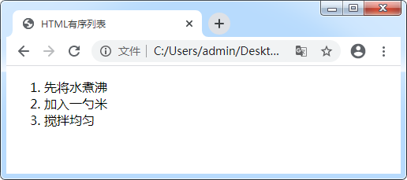
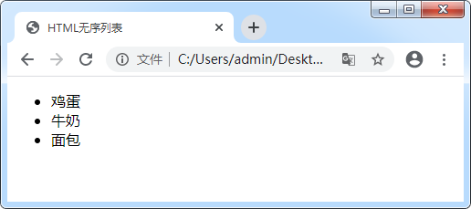
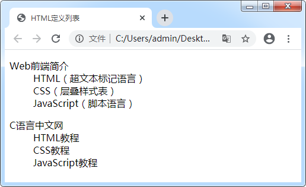

首页 > 编程笔记
HTML有序列表+无序列表+定义列表
在网站开发过程中，我们经常会使用到列表（list）。列表可以将若干条相关的内容进行整理，让内容看起来更加有条理。例如，C语言中文网首页的「推荐阅读」、「精品教程」以及「最近更新」中的内容都使用了列表进行排列。接下来咱们看一下列表的具体使用方法。
HTML 为我们提供了 3 种不同的列表：
我们来看一个简单的实例：
上述代码中使用了 <ol>、<li> 标签，接下来我们来分别看一下这两个标签：
实例：
具体语法格式如下：
上述代码中使用了 <dl>、<dt> 及 <dd> 标签，我们来分别看一下这三个标签：
通过运行结果可以发现，<dt>、<dd> 标签的联系与区别：
HTML 为我们提供了 3 种不同的列表：
- 有序列表
- 无序列表
- 定义列表
1. 有序列表
在 HTML 中， <ol> 标签用来表示有序列表。有序列表之间的内容有先后顺序之分，例如菜谱中的一系列步骤，这些步骤需要按顺序完成，这时就可以使用有序列表。我们来看一个简单的实例：
<!DOCTYPE html> <html lang="en"> <head> <meta charset="UTF-8"> <title>HTML有序列表</title> </head> <body> <!-- 有序列表 --> <ol> <li>先将水煮沸</li> <li>加入一勺米</li> <li>搅拌均匀</li> </ol> </body> </html>在浏览器中运行效果如图所示：

图1：HTML 有序列表
图1：HTML 有序列表
上述代码中使用了 <ol>、<li> 标签，接下来我们来分别看一下这两个标签：
- <ol> 是 order list 的简称，表示有序列表。它可以为列表的每一项进行编号，默认从数字 1 开始；
- <li> 是 list item 的简称，表示列表的每一项。列表中还可以包含文本或其它元素，甚至是新的列表。<ol> 中有多少个 <li> 就表示有多少条内容。
提示：在使用 <ol> 时，它一般和 <li> 配合使用，不会单独出现。而且不建议在 <ol> 中直接使用除 <li> 之外的其他标签。
2. 无序列表
在 HTML 中，我们使用 <ul> 标签来表示无序列表。无序列表和有序列表类似，都是使用 <li> 标签来表示列表的每一项，但是无序列表之间的内容是没有顺序的。例如，早饭的种类不需要表明顺序，这时就可以使用无序列表。实例：
<!DOCTYPE html> <html lang="en"> <head> <meta charset="UTF-8"> <title>HTML无序列表</title> </head> <body> <!-- 无序列表 --> <ul> <li>鸡蛋</li> <li>牛奶</li> <li>面包</li> </ul> </body> </html>浏览器运行结果如图所示：

表2：HTML 无序列表
上述代码中使用了 <ul>、<li> 标签，那么我们来分别看一下这两个标签又是什么含义呢？
表2：HTML 无序列表
-
<ul> 是 unordered list 的简称，表示无序列表。默认情况下，无序列表的每一项都使用
●符号表示； - <li> 同 <ol> 中的 <li> 一样，它也表示列表中的每一项。
提示：<ul> 一般和 <li> 配合使用，不会单独出现。而且不建议在 <ul> 中直接使用除 <li> 之外的其他标签。
3. 定义列表
在 HTML 中，<dl> 标签用于创建定义列表。它是由定义标题和定义描述两部分组成的，而且至少要包含一条定义标题或定义描述。一般情况下，当要展示的列表形式包括标题和描述两部分时，使用定义列表再合适不过了。具体语法格式如下：
<dl>
<dt>定义标题<dt>
<dd>定义描述<dd>
<dd>定义描述<dd>
<dd>定义描述<dd>
</dl>
上述代码中使用了 <dl>、<dt> 及 <dd> 标签，我们来分别看一下这三个标签：
- <dl> 是 definition list 的简称，表示定义列表；
- <dt> 是 definition term 的简称，表示定义术语，也就是我们常说的定义标题。一般情况下，每个定义标题都会对应若干条定义描述；
- <dd> 是 definition description 的简称，表示定义描述。定义描述一般是对定义标题的解释说明。
请读者注意此处的 <dt>、<dd> 是同级标签，都是 <dl> 的子标签。
具体使用场景如下示例：
<!DOCTYPE html>
<html lang="en">
<head>
<meta charset="UTF-8">
<title>HTML定义列表</title>
</head>
<body>
<!-- 定义列表 -->
<dl>
<dt>Web前端简介</dt>
<dd>HTML（超文本标记语言）</dd>
<dd>CSS（层叠样式表）</dd>
<dd>JavaScript（脚本语言）</dd>
</dl>
<dl>
<dt>C语言中文网</dt>
<dd>HTML教程</dd>
<dd>CSS教程</dd>
<dd>JavaScript教程</dd>
</dl>
</body>
</html>
浏览器运行效果如下图：

图3：定义列表
图3：定义列表
通过运行结果可以发现，<dt>、<dd> 标签的联系与区别：
- 都在浏览器中独占一行，属于块级元素；
- <dt> 充当了列表的标题，多个 <dt> 之间可以没有关系；
- 一般情况下，<dd> 标签中间的内容是对 <dt> 的描述。
提示：<dl> 一般与 <dt> 或 <dd> 配合使用，不会单独出现。不建议在 <dl> 中直接使用除 <dt>、<dd> 之外的其他标签。
4. 总结
| 列表分类 | 说明 |
|---|---|
| 有序列表 | <ol> 表示有序列表，<li> 表示列表中的每一项，默认使用阿拉伯数字编号。 |
| 无序列表 |
<ul> 表示无序列表，配合 <li> 实现，默认使用●符号显示。 |
| 定义列表 | <dl> 与<dt>、<dd> 配合实现，<dt> 充当列表的标题，<dd> 是对 <dt> 的解释说明。 |
关注公众号「站长严长生」，在手机上阅读所有教程，随时随地都能学习。内含一款搜索神器，免费下载全网书籍和视频。

微信扫码关注公众号